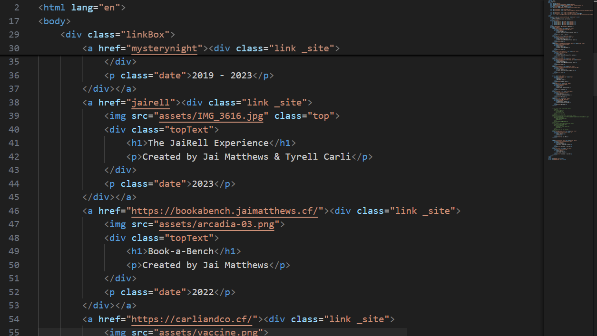

I've recently decided to list my website itself amongst the list of projects ...that are on my website. Perhaps it doesn't make a lot of sense, but it's what I'm going with!
The benefits of doing so are twofold. First, I am able to properly credit the fact that this website itself is a major project of mine and the result of countless hours of work. But second, its listing comes with this very post in which I can discuss this website's history, how it was developed, and what programming has gone into it.
I should preface this with a warning that some of this information may soon become outdated. I'm frequently changing how certain features work (as you will soon see!), meaning some of the below may one day not be completely accurate.
As with far too many things in my life, this all began with a truly awful joke. A my braincells joke! For the uninitiated, a my braincells joke would look a bit like this:
Or possibly this:
Perhaps even this:
And you get the gist. A few years ago, Mark Gurney created a website that served as a compendium of my braincells jokes. It was a peculiar project, but it encouraged me to have a go making my own websites to publish online. I had made one or two rudimentary websites before for school projects, but had thus far never made them just for fun or to publish them online.
So, using a sketchy now-defunct domain registrar, Mark helped get me set up with jaimatthews.cf and before long I had a page that linked to my various projects. The way it works is fairly simple, the code is just hosted using GitHub Pages, meaning this is a static website.
The "old website", as I now call it, was launched in 2022. There's a project listing for it on my home page, but you can't access the original version anymore. It was my first effort to create a useful user interface to be able to navigate between different projects in an easy manner.
Truthfully, there's no too much to say about this website. It was designed specifically with my own laptop screen size in mind, so had very poor CSS. The layout was confusing, and it was difficult to maintain as I had to make several changes to several HTML pages for every update.
Clearly, it needed to change.
The old website lasted about a year. For most of that time, I knew it needed to go. But I couldn't figure out what it should become.
Then I discovered the website of Maddy Thorson, the developer of the video game Celeste, and loved the layout. Hers was fundamentally just a list, broken down into different sections, where every project would be listed with a simple title, description, and background photo. It was a much simpler system than I had been using, and I thought it would be a perfect site to model my new one from. Also, because I recreated the website from nothing, I took care to ensure the CSS was written in a way that could handle mobile visits.
And that's how I ended up with my four lists of projects on the home page.
Of course, over time I continued to have more Ideas and wanted to implement them into the site.
Everybody seems to mention the 'dots' on the website (try clicking on this page!). This is actually code stolen from another project of mine - balls - where I did simple animations using the same dots. One day I decided to experiment adding them to my website, and it just stuck.
The way it works if fairly simple, there's just a canvas on top of this page and some JavaScript code that animates the balls. I discuss how it works in more detail here.

Static websites come with their frustrations. Storing information is a database is out of the question, so you'll have to be a little bit more creative. This has become a relevant struggle for me several times, but the most crucial is storing all the 'projects' that appear on the home page.
My first solution was, to put it one way, a bit shit. All of the projects' HTML was entered in by hand. If I wanted to change it in any way, I would change the HTML itself. And if I wanted to add a new project, I would copy the whole segment of HTML and replace the key parts of it. So, not great.
My next solution was to use JavaScript to create the actual HTML elements. I would store the projects in a JavaScript list containing all of their crucial information, then a function would go through and 'create' the projects to go on the page.
This model was far better, because it allowed me to add and modify projects more easily.
Nowadays, it's stored in a very similar manner. I still use similar JavaScript code to create the page, but the data itself is stored in a separate JSON file in order to keep different features of the website separate. This solution is the easiest of all when it comes to making changes.
A slightly more recent change was the entire website's colours. When I created the "new" website, I replaced the existing colour scheme with a lighter one. Some people were unhappy about this, so I sought to create a 'dark mode' that would more closely mimic the old design.
This led me to redo the colours of the website, storing them all as variables, where colours represented different purposes or levels in a hierarchy. This way, other themes could exist for the whole website that simply use analogous colours to the main one. In this process, I also simplified and 'flattened' the design of the website so that it could be more easily transformed.
So now there was a toggle in the footer to switch between the different themes. But how would the website remember which theme to use? My first thought was to pass the theme through the URL (e.g. "jaimatthews.com/read/website?theme=light"). This idea was quickly shut down, and for good reason. Instead, I began to look into cookies. I had recently learnt that, to my surprise, these were a feature of static websites. So after a few headaches I had a system that could remember your theme preference from page to page just by loading the one JS file.
Having opened to door to cookies, I had other ideas too! For instance, if you go back to the home page, you won't be taken through the welcome animation again - the website remembers you've already seen it. Of course, if you close your browser and reopen it the cookies will clear and you can experience the animated afresh.
Over time, I began to realise that my website was full of random projects without much explanation. To resolve this, I began to create pages (much like this one!) that could lend context to a project. These are accessible using the button on a project
In keeping with my mission to make the website as maintainable as possible, information about which projects have pages is also stored in the aforementioned JSON file.
There remains plenty of things to do for this website! As you probably know, I write all of the HTML, CSS and JavaScript for this website myself. This is something I intend to continue doing for the foreseeable future. But I want to add a backend to the website too. The main reasons I haven't thus far are time & money. Writing a whole secure backend will take time, and hosting it will cost much more money than I'm currently spending. But I'm certain that one day I will get around to doing it. When the time comes, I will store projects in a database, and I'll create a rudimentary system to manage the content from a backend developer version of the website.
I've also considered Wordpress, I even got a bit of experience using it during my Mathematics and Computer Science degree, but ultimately I have decided it's not the best fit for my website.
And I'm hoping that many more projects make their way onto my website as I continue to work on creating new things!
-Jai